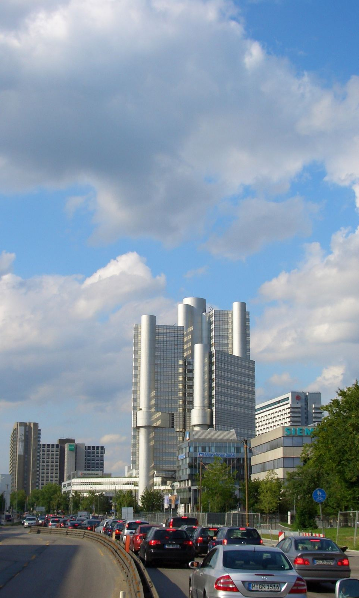

Conferences · AI
MLcon Munich 2027
- Dates
- –
- Venue
- Smart Village München, Rosenkavalierplatz 13, 81925 Munich
- Location
- Munich, Germany
- Format
- Hybrid
- Category
- AI
- Industry
- AI
- Organiser
- S&S Media
- Price
- Official ticket section, accessed 23 Nov 2026: Workshop Day from €499*; 2-Day Pass from €799*; 3-Day Pass + free workshop day from €1,039* (asterisks as printed on the official page).
- Official website
- https://mlconference.ai/munich/
About
Official page says MLcon, API Conference, VibeKode and AI Engineering Summit run side by side in Munich that week with one ticket. Only the MLcon edition is listed as a separate atlas event. Dates are local to the host city (Central European Time, UTC+1 / UTC+2 in summer).
Topics: machine learning, generative AI, AI engineering.
No organiser attendance figure found on the official pages fetched 24 Nov 2026. Ranked by our estimated size tier 'small' (under 10,000 attendees/visits), a judgement from format, venue and scale, not an official number.
Sources
- Official — https://mlconference.ai/munich/
Hotels
- Hotel München Palace — 5★ · Trogerstraße 21, 81675 München, Germany · 1.8 km from the venue · Price on request
- Hotel Vier Jahreszeiten Kempinski München — 5★ · Maximilianstrasse 17, 80539 München, Germany · 3.1 km from the venue · Price on request
- Mandarin Oriental, Munich — 5★ · Neuturmstrasse 1, 80331 München, Germany · 3.2 km from the venue · Price on request
- Hilton Munich City — 4★ · Rosenheimer Straße 15, 81667 München, Germany · 3.1 km from the venue · Price on request
- Novotel München City — 4★ · Hochstrasse 11, 81669 München, Germany · 3.3 km from the venue · Price on request
Venue
- Smart Village München — Venue · Rosenkavalierplatz 13, 81925 Munich, Germany · 850 capacity